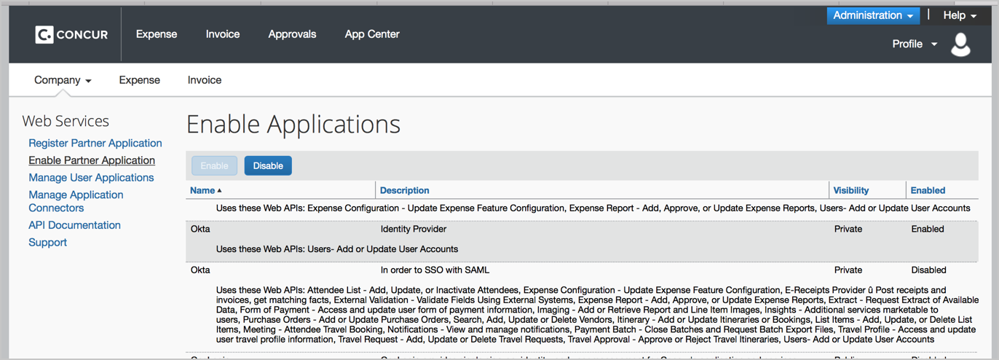
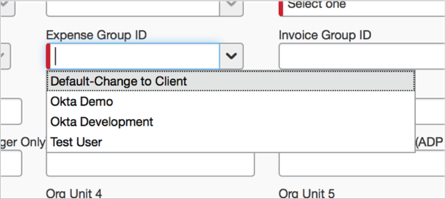

This guide provides the steps required to configure Provisioning for Concur.
Notes
Okta supports the creation of a Base user record in Concur. Contact the Concur implementation staff to determine whether your Concur tenant uses Expense features that require employee data that is not capable of being populated by the current User API and therefore is not supported by the Okta User Provisioning application. If this is the case, you are required to populate the additional data using Concur specified import files.
The fields that can be populated by the User Provisioning app are specified: here.
Small Business:
The Okta-Concur integration does not support the Concur Small Business Edition.
Standard Edtion:
Okta supports provisioning functionality for Concur Standard Edition. Note that Okta only creates a base user record in Concur. Standard Edition clients that are not using extended features can use the User Provisioning app to add records without having to import additional data. However, even some Standard Edition features require additional file imports or manually added information in Concur by the client.
Professional Edition
Okta supports provisioning functionality for Concur Professional Edition. Note that Okta only creates a base user record in Concur; you may require file imports for attributes (such as employee banking data) not supported by the Concur API. Many Expense features require employee data that User Provisioning applications cannot populate since the current User API does not currently include those features.
Premium Edition:
Okta supports provisioning functionality for Concur Premium Edition. Note that Okta only creates a base user record in Concur; you may require file imports for attributes (such as employee banking data) not supported by the Concur API. Many Expense features require employee data that User Provisioning applications cannot populate since the current User API does not currently include those features.
A client can determine the Concur Edition type by having their administrator login to their Concur site. If they see a Setup menu with a sub option for Expense within the Administration menu (as shown below), then this is a Standard Edition site. If the client administrator does not see the Expense menu within the Setup menu, then they have a Concur Professional Edition site:

The following provisioning features are supported:
Schema Discovery
Create Users
Note that Okta only creates a user’s base profile in Concur.
Update User Attributes
Deactivate Users
Sync Password
Note: Import of Users is currently supported only in CSV format.
Letter of Authorization (LOA): Concur requires a letter of authorization before you can start using Okta for provisioning. If you are implementing Provisioning, or for Provisioning plus Single Sign On (SSO):
Download the following document, sign it, and scan the signed copy into a pdf file.
Concur Letter of Authorization - Provisioning or Provisioning plus SSO
Click the link below to generate a Provisioning Enablement Request email to Concur. Fill in the fields and attach the LOA.
Note: If the above link does not generate an email message on your system, open this Email Text and copy and paste the information into a new email message.
Universal Directory for Concur is an Early Access feature. If you would like to turn on UD for Concur, contact Okta Support to enable the following feature flag: PROV_CONCUR_CLOUD_DIRECTORY_ENABLE.
Login to Concur (commonly, https://www.concursolutions.com) with your Concur Admin account.
Navigate to Administration > Company > Web Services.

Navigate to Enable Partner Application, then find Okta in the list and make sure it is Enabled.
Note: Contact Concur to enable the Okta application for your Concur tenant if the application does not appear in the Web Services section.

Configure your Provisioning settings for Concur as follows:
Check the Enable provisioning features box.
In the API Authentication section, click Authenticate with Concur:

A new window will appear displaying the Concur login page. Enter your Concur Admin credentials and log in.
A new window will appear displaying the Concur login page. Enter your Concur Admin credentials and log in.
A message will appear with option to allow Okta to connect to your tenant. Choose Allow for provisioning to work.

Now your app is authenticated, scroll down the Provisioning page and select those provisioning features you want to enable:

Click Next.
You can now assign people to the app (if needed) and finish the application setup.
The required attributes in Concur depend on your Concur tenant settings. Follow the steps bellow to add all required user attributes to the user profile:
In Okta, from the Admin dashboard, select Directory > Profile Editor.
Select the APPS section in the left navigation bar, then find your app in the list.

Select Add Attribute, then Refresh Attribute List to see the latest list of Concur attributes:

Make sure that all attributes with the Required attribute in the description is selected. Additionally, you can add more attributes of your choice.
Save the profile.
Setup is now complete.
There are few special attributes in Base user profile, whose values may vary depending on your Concur Edition. Pay special attention to these attributes:
Locale Name
Select value from drop down menu.
Country Code
Select value from drop down menu.
Currency Key
Select value from drop down menu.
Expense Group ID
Concur Standard edition may or may not have groups. This attribute is termed as Expense Policy Group in Concur Standard Edition, and Custom21 will be used for the Expense Group value. You have to pass the Group Code value; to get a list of Group code values pertaining to the group names, go to the Accounting Administration menu in Concur, then click on Accounting Structure.
Concur Professional/Premium edition has groups. Custom21 will be used for the Expense Group value. Custom 22 will be used for the Invoice Group value. You have to pass the Group Code value; to get a list of Group code values pertaining to the group names, go to Accounting Administration menu in Concur, then click on Accounting Structure.
Ledger Key
For Concur Standard Edition, the value default to be passed is DEFAULT. Although this attribute does not appear in your Concur UI, but is required for provisioning.
For Concur Professional/Premium Edition, the Ledger code(s) must be obtained from Concur since the Code is not available in the API and it is not exposed to the client administrator in the Concur UI (Accounting Administration menu). You will have to maintain the list of Ledger codes, and plug them in Okta when assigning new users. Contact Concur at pdspe@concur.com to obtain a list of valid Ledger Code(s) relevant to your Concur tenant.
For these attributes Concur has a pre-defined list of allowed values per tenant, and you will experience errors if you use a wrong value. So make sure you know what to enter here. See the Schema Discovery section to see how to get allowed values.
This application supports Schema Discovery feature, which allows to extend the list of attributes to sync with Concur. Some attributes are restricted by Concur to allow values only from a predefined list. Due to API limitation we cannot get these values. Such attributes have the following note in their description: The valid values for this field are restricted and configured in Concur.

To get a list of allowed values for these attributes, go to Concur web-site, navigate to the Add User form and check the values for the selected field.
Here's an example for Expense Group ID attribute:

Most common errors are:
Concur's required field was not added to the User profile or had an empty value:

To fix this, make sure you added the required field to your Application User profile and provide it with a valid value.
Set a wrong value to a field, for which valid values are strictly defined:

To fix this, provide a field with a valid value. Check Schema Discovery section on how to get valid values.
In order to enable UD support for Concur:
Contact Okta support team and request the following feature flag be enabled for your Okta org: PROV_CONCUR_CLOUD_DIRECTORY_ENABLE.
Once the feature is enabled, add a new instance of the Concur App.
Note: We do not recommend reusing your existing instance of the Concur app for UD features.
Follow the steps above to configure the new application powered with UD features.